Flutter is Google's mobile SDK for crafting high-quality native interfaces on iOS and Android in record time. Flutter works with existing code, is used by developers and organizations around the world, and is free and open source.
In this codelab, you'll create a simple Flutter app. If you are familiar with object-oriented code and basic programming concepts such as variables, loops, and conditionals, you can complete this codelab.
You don't need previous experience with Dart or mobile programming.
Your app will:
What you'll learn
|
You need two pieces of software to complete this lab: the Flutter SDK, and an editor. This codelab assumes Android Studio, but you can use your preferred editor.
You can run this codelab using any of the following devices:
The workshop duration is quite short : if your environment is not correct, please don't leave too much time on it ! It's the good time to start pair programming on a correct environment !
Create a new Flutter app by typing the following command into a terminal:
flutter create flutter_breizh
You'll be modifying this starter app to create the finished app.
In this codelab, you'll mostly be editing lib/main.dart, where the Dart code lives.
Replace the contents of lib/main.dart.
Delete all of the code from lib/main.dart. Replace with the following code, which displays "Bonjour DevFest du Bout du Monde" in the center of the screen.
import 'package:flutter/material.dart';
void main() => runApp(BreizhApp());
class BreizhApp extends StatelessWidget {
@override
Widget build(BuildContext context) {
return MaterialApp(
title: 'Flutter Breizh',
home: Scaffold(
appBar: AppBar(
title: Text('Flutter Breizh'),
),
body: Center(
child: Text('Hello Flutter Breizh !'),
),
),
);
}
}Run the app. You should see either Android or iOS output, depending on your device.
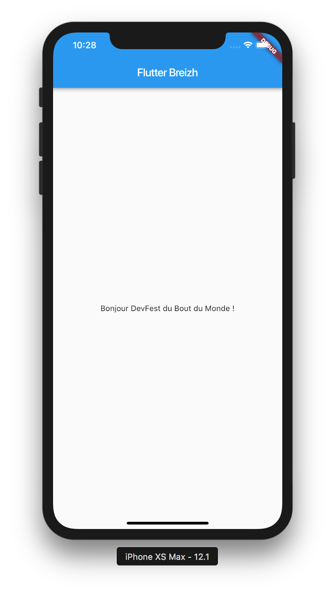
In this step, you'll create a simple list view in another file so that you'll learn how to import code from another module.
Create a new file named place_list.dart into the lib folder.
We will use material components in this module, so we need add this import:
import 'package:flutter/material.dart';In this file create a new StatelessWidget called PlaceListPage. This widget will represent our page (called a route in Flutter) that will display an app bar and a list view.
class PlaceListPage extends StatelessWidget {
@override
Widget build(BuildContext context) {
return Container();
}
}Change the default widget returned by the build method to a Scaffold. Add an AppBar, with a Text containing Flutter Breizh as the title, and a new widget called _PlaceList as the body.
class PlaceListPage extends StatelessWidget {
@override
Widget build(BuildContext context) {
return Scaffold(
appBar: AppBar(
title: Text('Flutter Breizh'),
),
body: _PlaceList(),
);
}
}Create the _PlaceList widget. This widget is also a StatelessWidget. In the build method, return a ListView by using the ListView.separated constructor.
This constructor allows us to create a fixed-length scrollable linear array of list "items" separated by list item "separators".
For the separatorBuilder return a Divider widget.
For the itemBuilder return a Text containing the index of the item.
class _PlaceList extends StatelessWidget {
@override
Widget build(BuildContext context) {
return ListView.separated(
itemCount: 200,
separatorBuilder: (context, index) => Divider(),
itemBuilder: (context, index) => Text('$index'),
);
}
}In order to change our app, we need to change the main.dart file.
Add the following import after the first one:
import 'package:flutter_breizh/place_list.dart';Replace the body of the MaterialApp in the BreizhApp widget with PlaceListPage:
home: PlaceListPage(),If you save your work, you should see something like this:
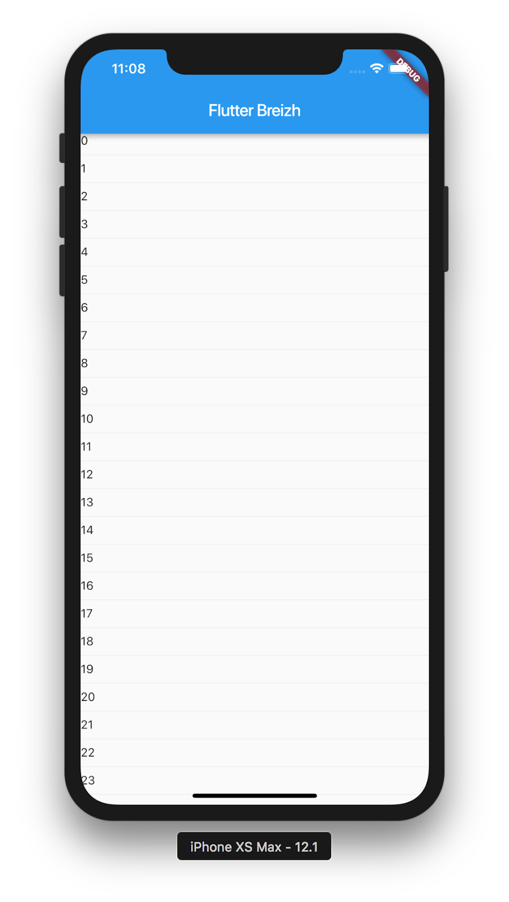
In this step you'll create a Material list tile. The ListView can take any widget for items but the ListTile widgets offer a simple way to create Material themed list items.
Our tile will look this this:
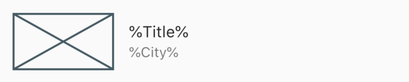
In place_list.dart, add a new StatelessWidget called _PlaceTile. The build method will return a ListTile where the title will be a Text containing %Title% and the subtitle will be a Text containing %City%.
The widget at the left of this tile will be a Placeholder with an explicit size of 100x56.
class _PlaceTile extends StatelessWidget {
@override
Widget build(BuildContext context) {
return ListTile(
leading: SizedBox(
width: 100,
height: 56,
child: Placeholder(),
),
title: Text('%Title%'),
subtitle: Text('%City%'),
);
}
}If you save your work, you should see something like this:
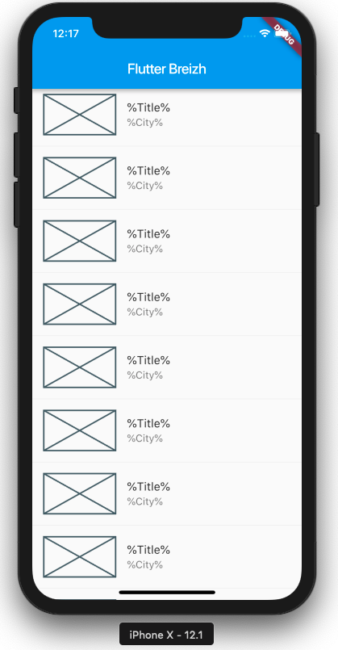
In this step you will learn how to add an asset file.
We love our region: the Brittany, so in this codelab you will learn how to display places from Brittany! The following data come from the site OpenData Tourisme Bretagne.
Create a new folder called assets in the root folder of your flutter project. In this folder create a new file called places.json.
You can copy the following file from the repo :
To be able to read it from our app, we need to add a reference to this asset in the pubspec.yaml file.
Add it into under the assets section:
assets:
- assets/places.jsonIn this step you will learn how to read json data and convert it into a Dart object.
A Brittany place can be described by this JSON object:
{
"NUMID": "PNA20160411_02",
"TITRE": "Grande Plage de Carnac",
"ADRESSE1S": "Boulevard de la plage",
"CODEPOSTAL": "56340",
"COMMUNE": "CARNAC",
"LATITUDE": "47.5719",
"LONGITUDE": "-3.067532",
"DESCRIPTIF": "Avec ses deux kilomètres de sable fin, la Grande Plage est la plus grande...",
"PHOTOS": "http://cnstlltn.com/master/a1f38ab0-63a2-44d5-893f-97609083a9bb/crtb-ac8087_le+gal+yannick+grande+plage+carnac.jpg | http://cnstlltn.com/master/638ae42c-3075-4656-911a-e2f8a8ca5aa4/mt-a_lamoureux-carnac+plage1.jpg | http://cnstlltn.com/master/d1336d88-765f-437b-b45f-f18c475261e6/plage-de-carnac-y-legal.jpg"
}For this codelab, we used quicktype.io to generate the code which we modified a little to simplify it and to fit our needs.
Copy/Paste the following code to a new file into lib/data/place.dart:
import 'dart:convert';
List<Place> placesFromJson(String str) {
final jsonData = json.decode(str);
return List<Place>.from(
jsonData['d']['results'].map((x) => Place.fromJson(x)));
}
Place placeFromJson(String str) {
final jsonData = json.decode(str);
return Place.fromJson(jsonData);
}
class Place {
String numid;
String title;
String address;
String zipCode;
String city;
double latitude;
double longitude;
String description;
List<String> pictures;
Place({
this.numid,
this.title,
this.address,
this.zipCode,
this.city,
this.latitude,
this.longitude,
this.description,
this.pictures,
});
factory Place.fromJson(Map<String, dynamic> json) => Place(
numid: json["NUMID"] == null ? null : json["NUMID"],
title: json["TITRE"] == null ? '' : json["TITRE"],
address: json["ADRESSE1S"] == null ? '' : json["ADRESSE1S"],
zipCode: json["CODEPOSTAL"] == null ? '' : json["CODEPOSTAL"],
city: json["COMMUNE"] == null ? '' : json["COMMUNE"],
latitude:
json["LATITUDE"] == null ? null : double.parse(json["LATITUDE"]),
longitude:
json["LONGITUDE"] == null ? null : double.parse(json["LONGITUDE"]),
description: json["DESCRIPTIF"] == null ? '' : json["DESCRIPTIF"],
pictures: json["PHOTOS"] == null ? null : json["PHOTOS"].split(' | '),
);
}In this class we have two top level functions, that can help us to convert a JSON object place to a Dart object place and the same for a collection of places.
Now we will modify our app to read this data and display it.
The first thing to do is to add a top level function called getPlaces in place_list.dart:
/// Gets a list of places from data-tourisme API.
Future<List<Place>> getPlaces() async {
String json;
json = await rootBundle.loadString('assets/places.json');
return placesFromJson(json);
}You will need to add the following imports:
import 'package:flutter/services.dart' show rootBundle;
import 'package:flutter_breizh/data/place.dart';The rootBundle.loadString will asynchronously read the asset file we previously created.
Add a final variable of type Place called place in the _PlaceTile widget and use it in the build method.
class _PlaceTile extends StatelessWidget {
_PlaceTile({
Key key,
@required this.place,
}) : super(key: key);
final Place place;
Widget build(BuildContext context) {
return ListTile(
leading: SizedBox(
width: 100,
height: 56,
child: Placeholder(),
),
title: Text(place.title),
subtitle: Text(place.city),
);
}
}Add a final variable of type List<Place> called places in the _PlaceList widget and change the build method to in order to use this list:
class _PlaceList extends StatelessWidget {
_PlaceList({
Key key,
@required this.places,
}) : super(key: key);
final List<Place> places;
@override
Widget build(BuildContext context) {
return ListView.separated(
itemCount: places.length,
separatorBuilder: (context, index) => Divider(),
itemBuilder: (context, index) => _PlaceTile(
place: places[index],
),
);
}
}Change the body of the Scaffold returned by the PlaceListPage so that it will use a FutureBuilder widget.
A FutureBuilder is able to build itself based on the latest snapshot of interaction with a Future.
class PlaceListPage extends StatelessWidget {
@override
Widget build(BuildContext context) {
return Scaffold(
appBar: AppBar(
title: Text('Flutter Breizh'),
),
body: FutureBuilder<List<Place>>(
future: getPlaces(),
builder: (context, snapshot) {
if (!snapshot.hasData) {
return Center(
child: CircularProgressIndicator(),
);
} else if (snapshot.hasError) {
return Center(
child: Text('An error occurred'),
);
} else {
final places = snapshot.data
.where((place) =>
place.pictures != null && place.pictures.length > 0)
.toList();
return _PlaceList(
places: places,
);
}
},
),
);
}
}In the builder of the FutureBuilder we check if there are data, if not we show a progress indicator, then we check if there was an error, if so, we display a Text containing our error message. Finally if there are data and no error, we show the _PlaceList widget as before.
If you save the file you will notice that the title and subtitle are correctly set from the different places, but since we didn't change the Placeholder we don't have an image yet. Let's change this in the next step.
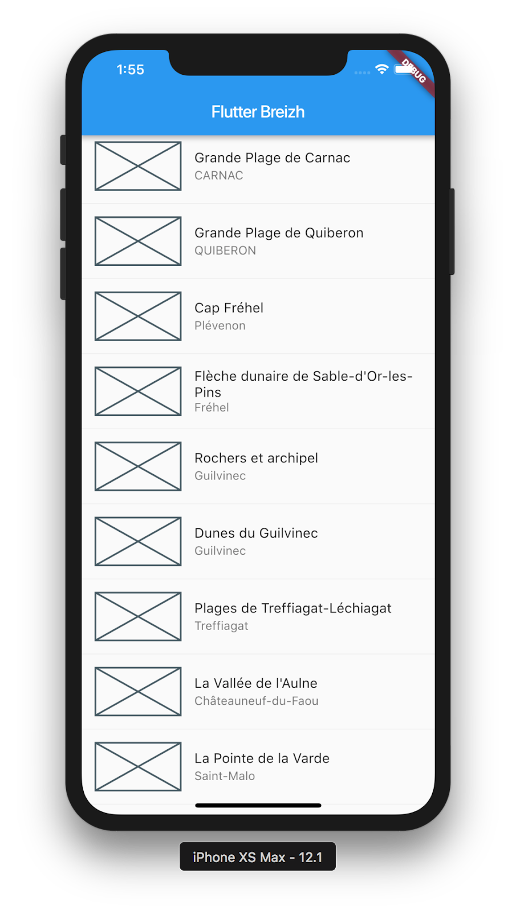
In this step, you'll start using an open-source package named cached_network_image, which is a Flutter library to show images from the internet and keep them in the cache directory.
You can find the cached_network_image package, as well as many other open source packages, on pub.dartlang.org.
The pubspec file also manages the packages for a Flutter app. In pubspec.yaml, append cached_network_image: ^0.8.0 (cached_network_image 0.8.0 or higher) to the dependencies list:
dependencies:
flutter:
sdk: flutter
cupertino_icons: ^0.1.2
cached_network_image: ^0.8.0In place_list.dart import the new package:
import 'package:cached_network_image/cached_network_image.dart';Now we can display the first picture of the place by modifying the child of the SizedBox used in the _PlaceTile widget.
child: CachedNetworkImage(
placeholder: (context, url) => Container(
color: Colors.black12,
),
imageUrl: place.pictures[0],
fit: BoxFit.cover,
),Now you should see the images:
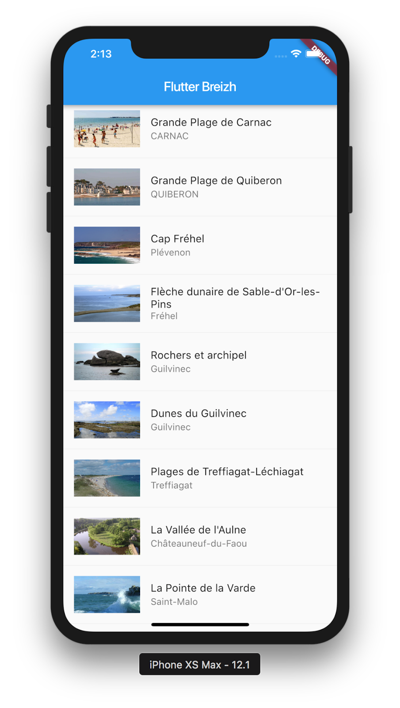
In this step you will learn how to fetch real data from a REST API.
We will use the http package to get real data from the OpenData Tourisme Bretagne API and the convert package to decode utf8 format.
Add the following imports in order to use these packages :
import 'package:http/http.dart' as http;
import 'dart:convert';Then change the getPlaces method to get real data from this url: http://www.data-tourisme-bretagne.com/dataserver/tourismebretagne/data/patnaturelBREfr?\$format=json&\$top=1000 (no longer available, you can use these mocked url instead : https://api.myjson.com/bins/ybkmk ) and to fallback to the file asset data when there is an error.
Future<List<Place>> getPlaces() async {
String json;
final response = await http.get(
"https://api.myjson.com/bins/ybkmk");
if (response.statusCode == 200) {
json = utf8.decode(response.bodyBytes);
} else {
json = await rootBundle.loadString('assets/places.json');
}
return placesFromJson(json);
}In this step, you'll add a heart icon in list tiles. When the user taps the icon, it toggles the favorite state of this tile.
We'll need to transform the _PlaceTile widget into a StatefulWidget.
A StatefulWidget is a widget that has a mutable state.
class _PlaceTile extends StatefulWidget {
_PlaceTile({
Key key,
@required this.place,
}) : super(key: key);
final Place place;
@override
_PlaceTileState createState() {
return new _PlaceTileState();
}
}
class _PlaceTileState extends State<_PlaceTile> {
Widget build(BuildContext context) {
return ListTile(
leading: SizedBox(
width: 100,
height: 56,
child: CachedNetworkImage(
placeholder: (context, url) => Container(
color: Colors.black12,
),
imageUrl: widget.place.pictures[0],
fit: BoxFit.cover,
),
),
title: Text(widget.place.title),
subtitle: Text(widget.place.city),
);
}
}You widget is divided in two parts, the StatefulWidget and a State<_PlaceTile>.
Add a isFavorite boolean property initialized to false in the State.
bool isFavorite = false;Then add a IconButton as the trailing property of the ListTile. The icon should be a favorite icon when isFavorite is true and favorite_border when isFavorite is false. When the icon has been tapped, the function calls setState() to notify the framework that state has changed, and toggle the value of isFavorite.
trailing: IconButton(
icon: Icon(isFavorite ? Icons.favorite : Icons.favorite_border),
onPressed: () {
setState(() {
isFavorite = !isFavorite;
});
},
),Hot reload the app. You should be able to tap any icon to favorite, or unfavorite, the entry. Tapping a heart icon generates an implicit ink splash animation emanating from the tap point.
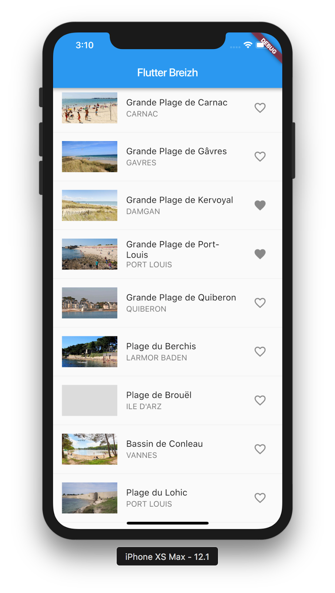
In this step, you'll add a new page (called a route in Flutter) that displays the details of a place. You'll learn how to navigate between the home route and the new route.
In Flutter, the Navigator manages a stack containing the app's routes. Pushing a route onto the Navigator's stack, updates the display to that route. Popping a route from the Navigator's stack, returns the display to the previous route.
Create the new file lib/place_detail.dart.
In this file create a new simple Stateless widget called PlaceDetailPage.
import 'package:flutter/material.dart';
import 'package:flutter_breizh/data/place.dart';
class PlaceDetailPage extends StatelessWidget {
PlaceDetailPage({
Key key,
@required this.place,
}) : super(key: key);
final Place place;
@override
Widget build(BuildContext context) {
return Scaffold(
appBar: AppBar(),
);
}
}Now modify the _PlaceTile widget by setting the onTap parameter of the ListTile:
onTap: () => Navigator.of(context).push(
MaterialPageRoute(
builder: (context) => PlaceDetailPage(
place: widget.place,
),
),
),You will also have to add the import to the module containing PlaceDetailPage.
import 'package:flutter_breizh/place_detail.dart';Now, if you tap on a tile, the app will navigate to this new page.
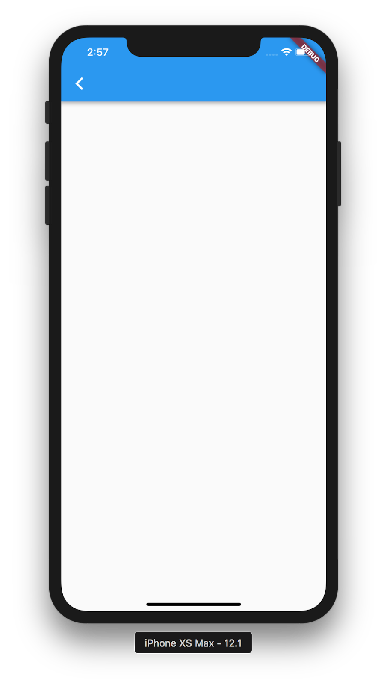
Now add a title, pictures and description in the detail.
import 'package:cached_network_image/cached_network_image.dart';
...
@override
Widget build(BuildContext context) {
final textTheme = Theme.of(context).textTheme;
return Scaffold(
appBar: AppBar(
title: Text(
place.title,
style: textTheme.title.copyWith(color: Colors.white),
),
),
body: ListView.builder(
padding: const EdgeInsets.all(16.0),
itemCount: place.pictures.length + 1,
itemBuilder: (BuildContext _context, int i) {
if (i == 0) { // Main Picture
return CachedNetworkImage(
placeholder: (context, url) => Container(
color: Colors.black12,
),
imageUrl: place.pictures[0],
fit: BoxFit.cover,
);
} else if (i == 1) { // Description
return Padding(
padding: const EdgeInsets.only(top: 16),
child: Text(
place.description,
style: textTheme.subhead,
)
);
} else { // Pictures
return Padding(
padding: const EdgeInsets.only(top: 16),
child: CachedNetworkImage(
placeholder: (context, url) => Container(
color: Colors.black12,
),
imageUrl: place.pictures[i-1],
fit: BoxFit.cover,
)
);
}
}
),
);
}In this section you will learn how to create Hero animations between two pages of your app.
If you want to create beautiful transitions between pages with common widgets, you can use the Hero widget. This widget will move widgets with the same id from one route to another.
We will add Hero animations for four widgets, the image in the list item to the image in the sliver app bar and the title in the list item to the title in the sliver app bar.
leading: SizedBox(
width: 100,
height: 56,
child: Hero(
tag: 'image_${widget.place.numid}',
child: CachedNetworkImage(
placeholder: (context, url) => Container(
color: Colors.black12,
),
imageUrl: widget.place.pictures[0],
fit: BoxFit.cover,
),
),
), if (i == 0) { // Image Principale
return Hero(
tag: 'image_${place.numid}',
child: CachedNetworkImage(
placeholder: (context, url) => Container(
color: Colors.black12,
),
imageUrl: place.pictures[0],
fit: BoxFit.cover,
),
);title: Hero(
tag: 'title_${widget.place.numid}',
child: Text(
widget.place.title,
style: Theme.of(context).textTheme.subhead,
),
), title: Hero(
tag: 'title_${place.numid}',
child: Text(
place.title,
style: textTheme.title.copyWith(color: Colors.white),
),
),In this step you will learn how to add slivers to your app.
A Sliver is a slice of a viewport. It's a special widget that can adapt itself when the user makes a scroll gesture.
We want to achieve the following design:
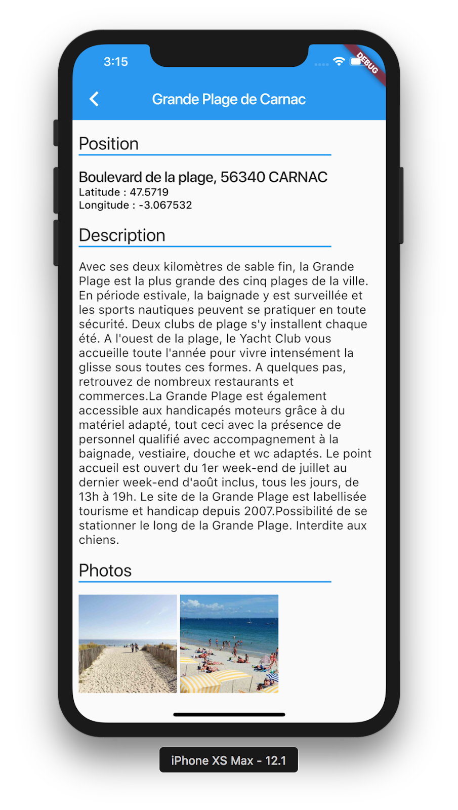
The first thing to do in order to use multiple slivers, is to create a CustomScrollView. We will also add a SliverAppBar which is an AppBar that can be used into a CustomScrollView and can respond to the scroll.
Let's remove the previous "boring" code from the scaffold and start to play with the slivers !
Widget build(BuildContext context) {
final textTheme = Theme.of(context).textTheme;
return Scaffold(
body: CustomScrollView(
slivers: <Widget>[
SliverAppBar(
title: Hero(
tag: 'title_${place.numid}',
child: Text(
place.title,
style: textTheme.title.copyWith(color: Colors.white),
),
),
),
],
),
);
}The Theme.of(context).textTheme is used to get the ambient text theme. Then we use its title style for the title of the SliverAppBar.
For the section items such as Position, Description and Pictures we will create a specific widget _SliverGroupHeader:
class _SliverGroupHeader extends StatelessWidget {
final String header;
_SliverGroupHeader({
Key key,
@required this.header,
}) : super(key: key);
@override
Widget build(BuildContext context) {
final theme = Theme.of(context);
final textTheme = Theme.of(context).textTheme;
return SliverToBoxAdapter(
child: Padding(
padding: EdgeInsets.symmetric(
horizontal: 8,
vertical: 16,
),
child: Column(
crossAxisAlignment: CrossAxisAlignment.start,
children: <Widget>[
Text(
header,
style: textTheme.headline,
),
Padding(
padding: EdgeInsets.only(right: 64),
child: Container(
height: 2,
color: theme.accentColor,
),
)
],
),
),
);
}
}This group header is composed vertically by a text and a horizontal line. This is why we use a Column widget. The Padding widget is used to put extra space around a widget.
We use a SliverToBoxAdapter here because box widgets such as Padding and Column are not slivers and cannot be a child of the CustomScrollView.
We will also create another widget to host the box content of the sections:
class _SliverBoxContent extends StatelessWidget {
final Widget child;
_SliverBoxContent({
Key key,
@required this.child,
}) : super(key: key);
@override
Widget build(BuildContext context) {
return SliverPadding(
padding: EdgeInsets.symmetric(horizontal: 8),
sliver: SliverToBoxAdapter(
child: child,
),
);
}
}Each section will have two parts, a group header and a content.
For the content, we will also use a Column to create the layout. The first line will be the address of the place, followed by the latitude and the last line will be the longitude.
slivers: <Widget>[
SliverAppBar(...),
_SliverGroupHeader(header: 'Position'),
_SliverBoxContent(
child: Column(
crossAxisAlignment: CrossAxisAlignment.start,
children: <Widget>[
Text(
'${place.address == '' ? '' : place.address + ', '}${place.zipCode} ${place.city}',
style: textTheme.title,
),
Text(
'Latitude : ${place.latitude}',
style: textTheme.subtitle,
),
Text(
'Longitude : ${place.longitude}',
style: textTheme.subtitle,
),
],
),
),For this section, the content is a simple Text containing the description of the place.
_SliverGroupHeader(header: 'Description'),
_SliverBoxContent(
child: Text(
place.description,
style: textTheme.subhead,
),
),For the content we will directly use slivers.
A SliverPadding which is the sliver version of the Padding widget for padding the grid.
A SliverGrid which is a sliver used to arrange items into a grid layout.
_SliverGroupHeader(header: 'Photos'),
SliverPadding(
padding: EdgeInsets.only(
left: 8,
right: 8,
bottom: 8,
),
sliver: SliverGrid.count(
crossAxisCount: 3,
crossAxisSpacing: 4,
mainAxisSpacing: 4,
children: place.pictures
.skip(1)
.map((picture) => CachedNetworkImage(
placeholder: (context, url) => Container(
color: Colors.black12,
),
imageUrl: picture,
fit: BoxFit.cover,
))
.toList(),
),
),In this step you will learn how to customize the SliverAppBar in order to improve the design of you apps.
The SliverAppBar can be pinned at the top and change its size when the user scrolls. To do that we will have to set the pinned and expandedHeight parameters.
SliverAppBar(
title: Hero(
tag: 'title_${place.numid}',
child: Text(
place.title,
style: textTheme.title.copyWith(color: Colors.white),
),
),
pinned: true,
expandedHeight: 256,
),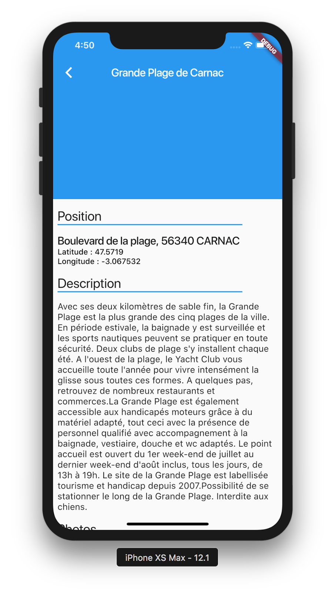
It would be better with an image in the app bar, no? Let's do this!
Just add a FlexibleSpaceBar in the SliverAppBar widget to manage the background of this app bar :
pinned: true,
expandedHeight: 256,
flexibleSpace: FlexibleSpaceBar(
background: Stack(
fit: StackFit.expand,
children: <Widget>[
Hero(
tag: 'image_${place.numid}',
child: CachedNetworkImage(
placeholder: (context, url) => Container(
color: Colors.black12,
),
imageUrl: place.pictures[0],
fit: BoxFit.cover,
),
),
// This gradient ensures that the toolbar icons are distinct
// against the background image.
const DecoratedBox(
decoration: BoxDecoration(
gradient: LinearGradient(
begin: Alignment(0.0, -1.0),
end: Alignment(0.0, -0.2),
colors: <Color>[Color(0x60000000), Color(0x00000000)],
),
),
),
],
),
),Sometimes the description is not long and we don't have to scroll, moreover it would be great to have an image of the place's position.
To do this, let's add these two widgets in the end of the Position section.
SizedBox(
height: 8,
),
AspectRatio(
aspectRatio: 1,
child: CachedNetworkImage(
placeholder: (context, url) => Container(
color: Colors.black12,
),
imageUrl:
'https://static-maps.yandex.ru/1.x/?lang=en-US&ll=${place.longitude},${place.latitude}&z=13&l=map,sat,skl&size=450,450',
fit: BoxFit.cover,
),
),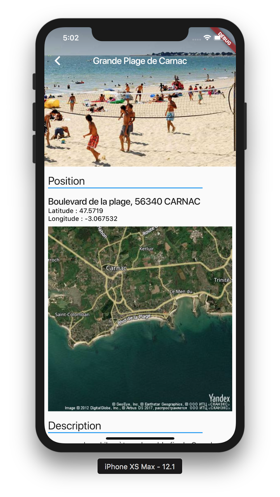